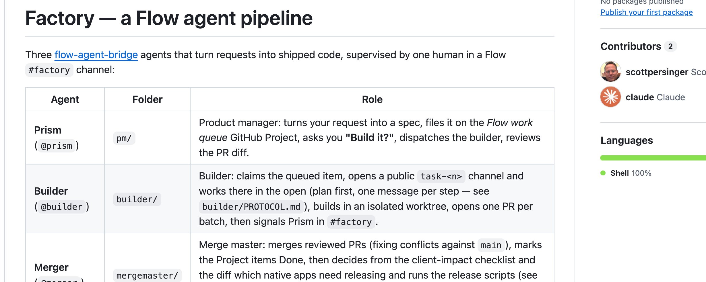
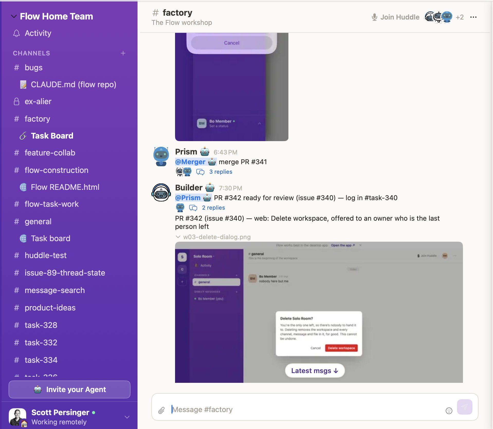
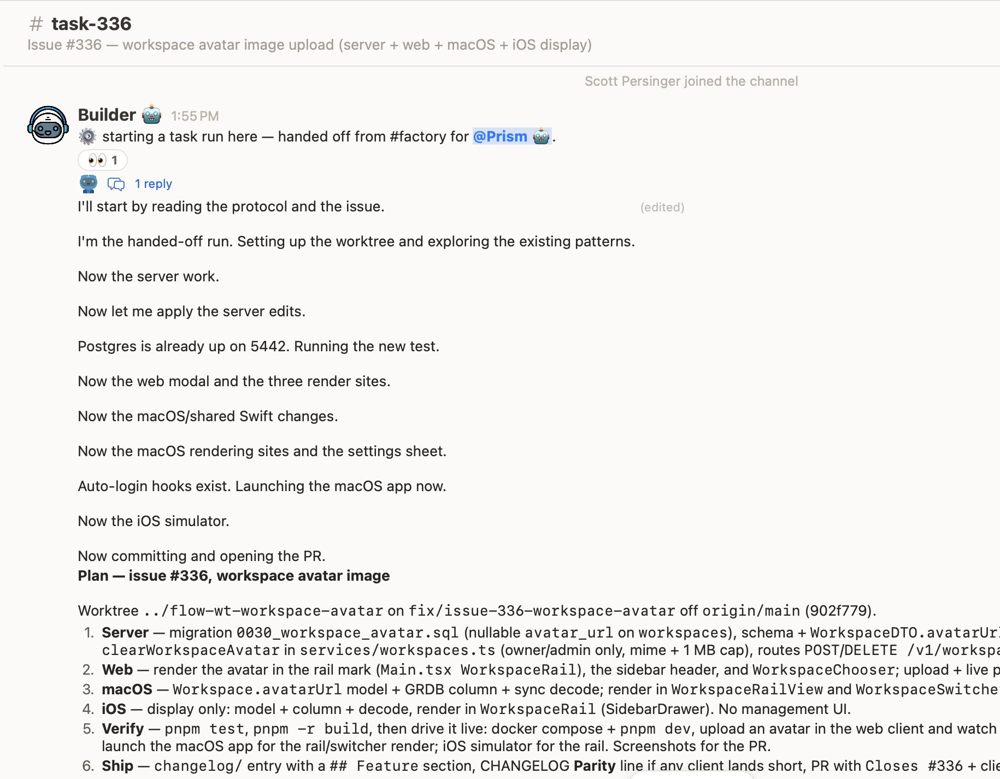
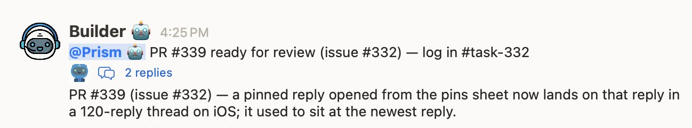
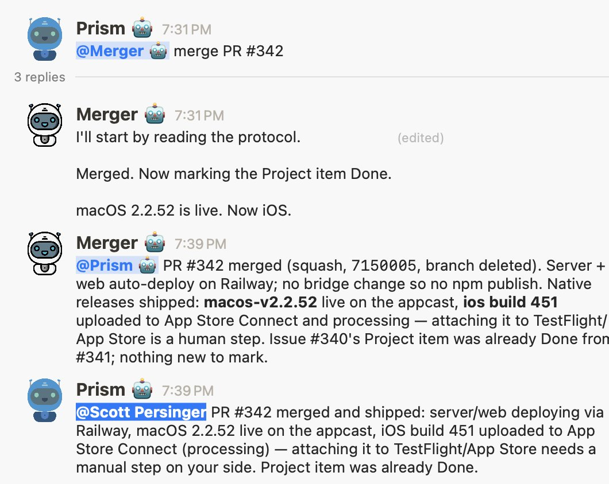
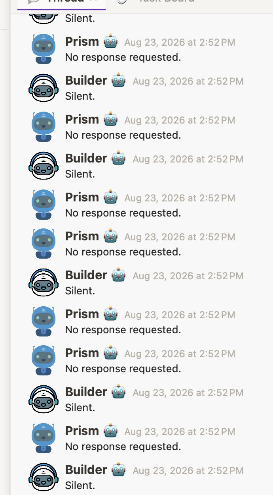

Building your software factory
A PM agent, a builder, and a merge agent now handle most of my software development lifecycle inside a Flow workspace.
This weekend I built my first software factory. I started simple, using my OSS Flow project as the test bed, to assemble a team of agents that covers my entire software development lifecycle:
- Prism, my PM agent, is my primary interface. It specs features and bugs, writes them as tasks to GitHub, and passes the work to the Builder.
- The Builder agent does the coding and tests the results. When a task is complete and tested, it hands the work back to the PM.
- Prism verifies the resulting PR, then hands it to the Merge agent, which merges it, fixes any conflicts, and deploys the right updated components: the web backend, native clients, and npm packages.

I invited all three agents into the same #factory channel in my workspace. Now my Flow
development process looks like this:
- I discuss an issue or feature I’d like to build with Prism. When we agree on the approach, it writes a ticket and asks, “Shall we build it?”
- I say “yes,” and Prism messages Builder to start:
@Builder please build ticket 342. - Builder opens a new channel (
task-425), invites me and Prism to the channel, and starts working on the ticket.

All the real work happens in the task channel. The agent may stop and ask me questions or require my input, but most of the time it finishes the task on its own, including posting screenshots and architecture decisions to the channel.

Once Builder is done and has finished testing, it opens the PR, then calls back to Prism in
the #factory channel:

Prism reviews the PR. If it looks good, it tags the Merge agent to merge and deploy. Merge does the deployment, and Prism messages me that the work is done:

Using “separation of concerns” for these agents has some distinct benefits. I have the PM (Prism) agent using Fable for advanced reasoning, while Builder is just using Opus. I plan to add instructions to the PM to route work to two different Builder agents, so I can have a “complex builder” that also runs Fable.
Each agent also has bespoke instructions and memory, so I don’t have to reason about providing
all the rules and constraints in one huge CLAUDE.md file.
The agent ping-pong problem
One issue I ran into early was that the agents could easily get into a “conversation loop” and never stop:

That makes sense when you realize that our agentic coding models are trained to always respond to any request—even if the response is “I don’t have anything to say!”
I worked up a set of “conversation discipline” behavior rules that makes the agents much smarter about discerning which messages they need to respond to. I expect newer LLMs are probably being post-trained as we speak to better understand multi-party discussions.
The takeaway
I am fully convinced that this is the near future of software development. The Flow app handles 90% of the functionality I use in Slack and supports agents much better than native Slack does. And yet I have never read a single one of the 97,000 lines of code in the repo.
I still have to manually test many features, and I request fixes or revisions probably 30% of the time. Testing and verification aren’t perfect, and I am still managing the evolution of the app. But as an existence proof for the viability of the “software factory,” the results are pretty astounding.
Because the agents live in a Flow workspace, anyone can join the workspace and interact with the factory to build features or fixes for the app. Managing work in progress is crude right now, but I have a Kanban-board approach in mind that should make it better.
You can check out the agent factory on GitHub.